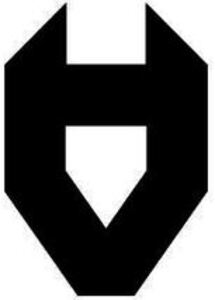

Trade Mark Journal No.2026/008 20 February 2026
WO0000001900342 (8,9,11,16,18,25,28,35)
Office of origin: European Union Intellectual Property Office (EUIPO)
Date of International Registration:16 December 2025
Date of designation in the UK:
16 December 2025

International priority date claimed: 8 October 2025
(European Union Intellectual Property Office (EUIPO))
(019258108)
- Class 8
- Hand tools and accessories therefor; cutlery; razors; hand-operated implements for household purposes; tool belts, tool holders, tool vests.
- Class 9
- Scientific, research, navigation, surveying, photographic, cinematographic, audiovisual, optical, weighing, measuring, signalling, detecting, testing, inspecting, life-saving and teaching apparatus and instruments; apparatus and instruments for conducting, switching, transforming, accumulating, regulating or controlling electricity; apparatus and instruments for recording, transmission, reproduction and processing of sound, images or data; recorded and downloadable media, computer software, blank digital or analogue recording and storage media; coin-operated mechanisms; cash registers, calculating devices; computers and their peripheral equipment; dry suits for divers, divers' masks, ear plugs for divers, nose clips for divers and swimmers, swimming fins, breathing apparatus for underwater swimming; fire extinguishing apparatus; protective and safety equipment for personal and professional use; protection devices for personal use against accidents; knee-pads for workers, protective face shields for workers, support belts for workers; head protection, safety helmets, helmets for use in sports; footwear for industrial purposes for protection against injury, industrial gloves for protection against injury; fire resistant gloves, cut-resistant gloves; electronic publications, printed matter, downloadable; downloadable educational and instructional materials; downloadable podcasts, downloadable video recordings; audiovisual teaching apparatus.
- Class 11
- Apparatus and installations for lighting, heating, cooling, steam generating, cooking, drying, ventilating, water supply and sanitary purposes.
- Class 16
- Paper and cardboard; printed matter; bookbinding material; photographs; stationery and office requisites (except furniture); adhesives for stationery or household purposes; drawing materials, illustration and artists' materials; paintbrushes; instructional and training materials; plastic sheets, films and bags for wrapping and packaging; printer types, printing blocks.
- Class 18
- Leather and imitations of leather; fur; suitcases, tote bags; umbrellas and parasols; walking staffs; whips, harness and saddlery; collars, leads and clothing for animals; rucksacks, bumbags, tool bags (empty).
- Class 25
- Clothing, footwear, headgear; gloves [clothing], socks, aprons [clothing], shawls, headscarves, balaclavas, snoods [scarves], face-covering scarves, balaclavas, balaklavas, sports headgear [other than helmets], balaclavas, belts, suspenders, trouser belts and belts being parts of clothing; costume accessories; work clothes; occupational clothing, work overalls, jumper suits, coveralls; work shoes.
- Class 28
- Games and playthings; video game apparatus; gymnastic and sporting articles; sport gloves; decorations and ornaments for christmas trees.
- Class 35
- Advertising; business management; business organisation; office functions services; retail and wholesale services, including online, in relation to the following goods: sale of common metals and their alloys, ores of metal, for building, transportable buildings of metal, non-electric cables end wires of common metal, other than electric, items of metal hardware, containers of metal for storage or transport, safes (strong boxes), hand tools, handiwork machines, fastening machines, fastening devices, joining machines, apparatus for coupling, mechanically operated tools, electric power tools, modular tools for machines, rotary tools (machines), rotating electrical machines, tools (parts of machines), hand-operated hand tools, hand tools, other than hand-operated, kitchen machines, workbenches, power operated tools, motors and power equipment, except for land vehicles, machine coupling and transmission components (except for land vehicles), agricultural tools, other than hand-operated hand tools, incubators for eggs, automatic dispensers, scientific, nautical, surveying, photographic, cinematographic, optical, weighing, measuring, signalling, checking (supervision), life-saving and teaching apparatus and instruments, apparatus for conducting, switching, transforming, accumulating, regulating or controlling electricity, apparatus for recording, transmission or reproduction of sound and images, magnetic data carriers, gramophone records, cd-'s, dvd's and other digital storage devices, cash registers, calculating machines, data processing apparatus and computing, software, fire-extinguishing apparatus, protective and safety equipment for personal and professional use, personal protective equipment, featuring lighting apparatus, heaters, steamers, cooking, refrigerating apparatus, apparatus for drying purposes, apparatus for ventilating, water supply installations, sanitary apparatus and installations, household fittings, household instruments, utensils for household purposes, kitchen appliances, containers for household use or kitchen use, kitchenware and dinnerware, other than knives, forks and spoons, combs and sponges, brushes, paint brushes, except paintbrushes, brush-making materials, cleaning implements and articles, un-worked or semi-worked glass, except glass used in building, articles made of glass, articles made of porcelain, articles made of earthenware, games, playthings, video game apparatus, sports accessories and gymnastic articles, christmas-tree ornaments.
Hardly Working OÜ
Representative: PATENT & TRADE MARK AGENCY KOITEL, Tina 26-2, EE-10126 Tallinn, ESTONIA